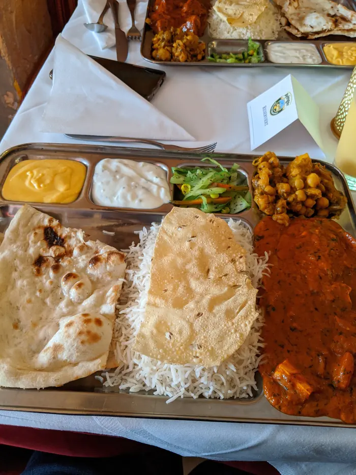

BombayIndisches Restaurant · Freising
Willkommen in der Altstadt.
Currys und Tandoori aus dem Lehmofen. Zum Essen bei uns, zum Abholen und zum Liefern.
Mo und Mi–So 11:30–14:00 und 17:30–22:00
Dienstag Ruhetag
Lieferung ca. 60 min Abholung ca. 30 min

Beliebt
Empfohlen vom Haus.
Zehn Gerichte, die das Restaurant selbst empfiehlt. Jedes gibt es mild, pikant, scharf oder sehr scharf.
- Chicken Curry14,90 €Zartes Hühnerfleisch in Currysoße mit feinen Gewürzen
- Butter Chicken14,90 €Zartes Hühnerfleisch in Butter-Tomaten-Soße
- Chicken Tikka Masala14,90 €Zartes Hühnerfleisch in Masalasoße
- Shahi Paneer12,90 €Hausgemachter Käse, zubereitet in Butter-Tomaten-Sahne-Soße, fein gewürzt
- Palak Paneer12,90 €Kräftiger Spinat mit hausgemachtem Käse, Ayurvedische Art
- Shahi Baingan12,90 €Auberginen mit hausgemachtem Käse und Ingwer in Mandelsoße, fein gewürzt
- Chana Masala12,90 €Kichererbsen in Curry mit frischen Tomaten und Ingwer
- Bhindi Masala12,90 €Frisches indisches Okra-Gemüse in kräftiger Soße
- Paneer Butter Masala12,90 €Käse in Masala-Soße
- Garlic Naan3,50 €Ovales Brot aus Hefeteig mit Knoblauch

Bei uns
In der Oberen Hauptstraße.
Farbige Räume mit dem Taj-Mahal-Wandbild, roten Bänken und Sternlaternen. Dazu eine Terrasse und WLAN.
Tisch reservieren: 08161 4965102
Lehmofen
Tandoori und Naan.
Tandoori-Gerichte und Naan kommen aus dem Holzkohlelehmofen, dem Tandoor: Hähnchen, Fisch, Garnelen und Gemüse, mariniert und gegrillt.
Auch ohne Fleisch
Zwanzig vegetarische Gerichte, mehrere davon auch vegan.
Tandoori auf der KarteFotos aus dem Bombay
Fotos: Gäste des Bombay.
Stimmen
Was Gäste bei Google schreiben.
4,5von 5 Sternen
417 Bewertungen
„Sehr gutes Essen, kurze Wartezeiten, Bedienung sehr freundlich und zuvorkommend.“
„Sehr schmackhafte, günstige und reichhaltige Gerichte zum Mittagstisch“
„Die Hauptspeise besaß genügend Reis für die Fleisch/Soßen Portion.“
417 Bewertungen im Google-Unternehmensprofil, Stand 06.10.2026. Auszüge ohne Namen. Wir prüfen nicht, ob die Bewertungen von Gästen stammen, die bei uns gegessen haben.
Zeiten
| Tag | Mittag | Abend |
|---|---|---|
| Montag | 11:30–14:00 | 17:30–22:00 |
| Dienstag | Ruhetag | |
| Mittwoch | 11:30–14:00 | 17:30–22:00 |
| Donnerstag | 11:30–14:00 | 17:30–22:00 |
| Freitag | 11:30–14:00 | 17:30–22:00 |
| Samstag | 11:30–14:00 | 17:30–22:00 |
| Sonntag | 11:30–14:00 | 17:30–22:00 |
Mittagspause 14:00–17:30. Geliefert wird zu den Öffnungszeiten.
Anfahrt
Restaurant BombayObere Hauptstraße 67
85354 Freising
Der Eingang ist leider nicht rollstuhlgerecht, einen rollstuhlgerechten Parkplatz gibt es nicht.